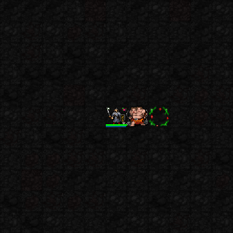
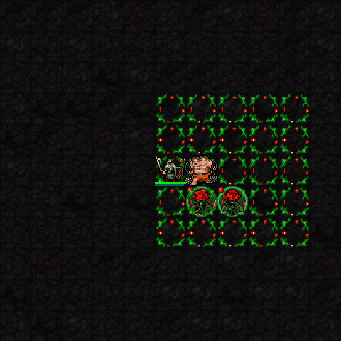

5성 · 붉은 정원의 만개
정원을 7×7로 확대하고 가시 소모 폭발·장미 공격을 강화합니다. 현재 이펙트는 정원 확대가 중심이며 별도 화려한 만개 폭발은 없습니다.

capture05 실제 SDL 테스트 전투장 캡처. 높은 신앙·고정 장비·자원으로 찍었으며 두 프레임을 느리게 반복합니다. 스이세이와 미코는 사용자 승인된 최신 버전을 유지합니다.
지정 위치에 정원을 설치하고 정원 안의 적에게 가시를 축적합니다. 이 캡처는 준비가 끝나기 전 설치 직후라, 정원 전체 대신 작은 사용 효과만 보입니다.

정원 안에 원거리 공격 장미 둘을 배치합니다. 이 장면은 높은 신앙의 5×5 정원과 장미 둘을 보여줍니다. 발사 순간 캡처는 아닙니다.

정원을 7×7로 확대하고 가시 소모 폭발·장미 공격을 강화합니다. 현재 이펙트는 정원 확대가 중심이며 별도 화려한 만개 폭발은 없습니다.